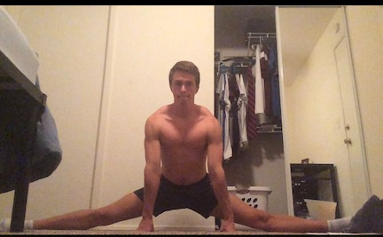

[notes about horse stance]
I'll be following Van Zandt's isometric split progression:
In this thread I'll provide you with a snippet of my book teaching you one way how to progress with your isometric splits. It details how to advance on a workout-by-workout basis, from total beginner to advanced. Hopefully you can implement this plan as a standalone method or combine it with your own to gain optimal results.
This method is based on the principle that total time under tension is key to building strength in extended positions, and therefore increasing flexibility. (Remember, a stronger muscle tenses less as it tries to support itself in an extended ROM.) An individual starting at the beginning of this schedule could reach full splits in as little as 6 months. Some people may achieve such results even quicker. Your overall progress will depend on your starting strength.
Note that this method is tough and not for the faint of heart. It requires you to hold strong, steady tensions for up to three minutes. Anyone who has tried standard isometrics in the past may very well be crapping their pants right now. Some people may even be reaching for a bottle of aspirin and prayer book when they find out the later stages involve holding such tensions while lifting as much as 30 kilos. Like I said - not for the faint of heart. But it does work. This method is the most successful with my clients.
The process of increasing ROM during each rep is simple: get into your front or side split and extend your leg(s) until you feel like you can't increase it any further; hold this position until you feel the tension start to dissipate. Don't stick around for too long - 30 seconds is enough for most folks. Extend further into the split. Hold, and extend further still. Ideally you should keep repeating this cycle until you reach your absolute maximum, but by that point most people will have no interest in tensing for three minutes. Yes, the worst is still yet to come! I usually do around three extensions before tensing. Tense the target muscle(s), building the tension up over 5 seconds, reaching its maximum by the fifth second. Hold steady, unwavering tension. You should be contracting at 100% maximum effort at all times.
When it comes to holding weight you can insert barbell plates into a tough rucksack or wear a weight vest. I prefer the latter.
The sets below are listed in ascending order. The numbers in brackets indicate how many workouts you should perform that training load. For example, 5 sets x 1:30 + 12.5 kg (6) means you should do five sets using tensions lasting one minute and thirty seconds, carrying 12.5 kilos, for six consecutive workouts. Six workouts usually take around two weeks to complete, going off the assumption you leave a full day of rest between workouts and you aren't overly sore afterwards. Note that, occasionally, you will be extremely sore following the use of this method. If you are very sore for several days after every workout, you need to reduce the intensity a bit. If you are very sore after just the first level, you should leave isometrics for the time being and focus on building overall lower body strength using exercises such as squats, deadlifts and lunges. In terms of order of exercises in your workout, do your isometrics at the very end, after your normal weight lifting routine.
Anyway, enough of that. Here are the details [format is (sets)x(duration)x(added weight) (number of sessions at that progression)]:
- 1x0:30 (1)
- 2x0:30 (1)
- 3x0:30 (1)
- 4x0:30 (1)
- 5x0:30 (1)
- 5x0:45 (6)
- 5x1:00 (6)
- 5x1:15 (6)
- 5x1:30 (6)
- 5x1:45 (6)
- 5x2:00 (6)
- 5x2:15 (6)
- 5x2:30 (6)
- 5x2:45 (6)
- 5x3:00 (6)
- 5x3:00x2.5 (6)
- 5x3:00x5 (6)
- 5x3:00x10 (6)
- ...
- 5x3:00x70 (6)
This schedule is capped at 5 sets carrying 30 kilos because I have never met a client who could not do full splits beyond level 28. Most achieve their maximal flexibility many levels before that. You can go up to level 28 if you wish... and if you can handle it. I said this method is tough; it hurts like a bitch, but it works like the devil. My advice is to cap your progress at one level above that with which you hit full splits, two at most. For example, if you reach full splits by level 18, you shouldn't need to progress further than 19 or 20.
Wondering why you even need to go any further at all? Good question. You might be able to do full splits by level 18, but you won't be able to do them "cold" (i.e. without a warm up). And that is what you want. So by going a little further up the scale, in this case to level 19 or 20, you'll develop enough strength that your body will feel safe enough to let you drop to the floor like a pancake in an instant. At any time of day (or night). Instantly. (Did I say you would do it instantly?)
Be warned: This schedule is tough. Very tough. You'll understand what I mean when you start hitting levels 13 and 14. But its intensity is what makes it so effective and successful. This method boasts a 100% success rate with my clients. Were they all genetic freaks? No. But they did all have the mental and physical fortitude to stick with this plan. If you do too, then you will do full splits also. I guarantee it.